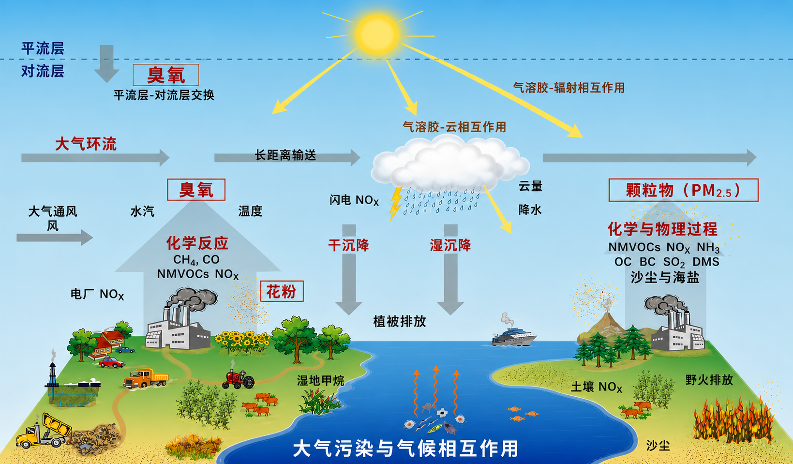

南京信息工程大学环境科学与工程学院
杨洋教授课题组 | 大气环境与气候变化交叉研究
课题组聚焦空气污染与气候变化相互作用，结合地球系统模式、大气化学传输模式、源追踪方法和机器学习，研究气溶胶、臭氧、云、辐射、气候和极端事件的过程机理与未来变化。
研究对象气溶胶、臭氧、云、辐射、气候、极端事件
主要方法数值模式、机器学习、溯源追踪、大数据分析
培养对象本科、硕士、博士、博士后
课题组研究方向
人类活动排放的大量气态和颗粒态污染物会通过化学反应、辐射强迫、云微物理和大气环流改变空气质量与气候系统。我们关注从排放、输送、化学转化到气候反馈的完整链条，服务于空气质量改善、减污降碳协同和未来气候风险评估。

气溶胶-气候相互作用
量化气溶胶减排、辐射强迫、云响应和短期气候变化之间的联系。
大气污染成因及溯源
研究臭氧和颗粒物来源、区域输送及其在不同气候背景下的变化。
极端天气气候影响
评估污染物变化对高温、降水、边界层和复合极端事件的作用。
模式与人工智能融合
发展模式模拟、观测约束、偏差订正和机器学习结合的研究框架。
最新动态：
2026课题组在 Nature Communications 发表中国清洁空气政策短期增暖缓解策略研究。
2026国家自然科学基金创新研究群体项目B类“边界层-气溶胶-云相互作用及其气候环境效应”获批，杨洋教授为项目骨干。
2025国家自然科学基金面上项目“2020-2060年大气污染物变化对中国未来气候和极端事件的影响研究”启动。
招生课题组长期招收硕士研究生、博士研究生和博士后，欢迎大气、环境、气候和数据科学背景的同学联系。
研究亮点：
污染溯源技术
发展全球大气污染溯源和追踪模拟技术，量化多区域、多行业污染物来源及其生命期过程。
气候-空气质量机制
揭示气候变暖影响我国空气污染的物理化学机制，为空气质量预测和减污降碳协同治理提供支撑。
碳中和路径评估
阐明碳中和路径下气溶胶减排的环境气候效应，探索碳污协同的未来优化减排方案。
代表性成果：
- Strategizing emission cuts in China to mitigate short-term warming from clean air policies, Nature Communications, 2026.
- Marine cloud brightening mitigates the warming induced by the aerosol reductions toward carbon neutrality, Communications Earth & Environment, 2026.
- Machine learning-based bias-corrected future projections of ozone concentrations from a chemistry-climate model, Environmental Science & Technology, 2026.
- Aerosols overtake greenhouse gases causing a warmer climate and more weather extremes toward carbon neutrality, Nature Communications, 2023.
- Climate effects of future aerosol reductions for achieving carbon neutrality in China, Science Bulletin, 2023.